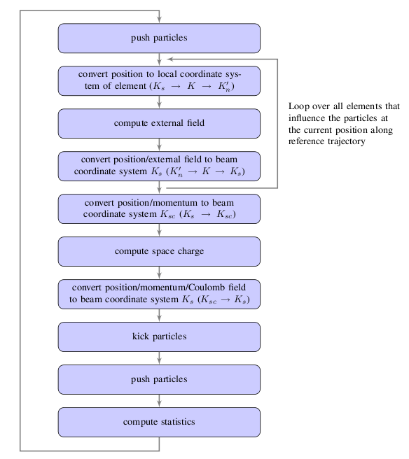
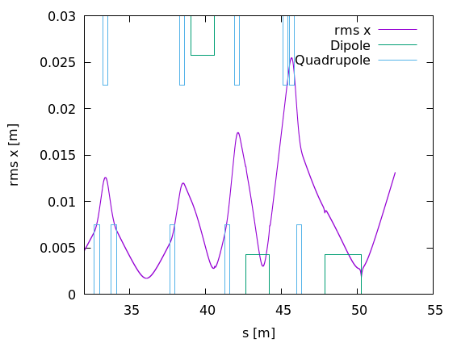

5 OPAL-T
5.1 Introduction
OPAL-T is the beam-line and linac flavor of OPAL. It is a fully three-dimensional time-domain tracking code for relativistic particles, with self-consistent space charge in the electrostatic approximation, wake-field support, and a broad element model that allows overlapping external fields. The legacy manual positions OPAL-T as one of the few production codes built from the start around parallel execution for high-statistics start-to-end simulations.
5.2 Variables in OPAL-T
The canonical variables are:
| Variable | Meaning | Units |
|---|---|---|
X |
horizontal position relative to the element axis | m |
PX |
horizontal normalized canonical momentum beta_x gamma |
1 |
Y |
vertical position relative to the element axis | m |
PY |
vertical normalized canonical momentum beta_y gamma |
1 |
Z |
longitudinal position in floor coordinates | m |
PZ |
longitudinal normalized canonical momentum beta_z gamma |
1 |
The independent variable is time t [s].
5.3 Integration of the Equation of Motion
OPAL-T integrates the relativistic Lorentz equation
\[ \frac{d(\gamma \mathbf v)}{dt} = \frac{q}{m} \left[ \mathbf E_{\mathrm{ext}} + \mathbf E_{\mathrm{sc}} + \mathbf v \times (\mathbf B_{\mathrm{ext}} + \mathbf B_{\mathrm{sc}}) \right]. \tag{5.1}\]
The legacy implementation uses the Boris-Buneman algorithm for the particle update. In practice a time step consists of:
- locating the active region of the reference particle,
- assembling coordinate transforms between the reference frame, floor frame, and element-local frames,
- evaluating external fields and self-fields,
- pushing the particles and reference particle forward,
- updating diagnostics and output.
5.4 Positioning of Elements
Since OPAL 2.0, elements can be placed directly in space using X, Y, Z, THETA, PHI, and PSI. The older ELEMEDGE notation is still supported. In that legacy path OPAL-T reconstructs the 3D position from ELEMEDGE, ANGLE, and DESIGNENERGY, assuming a reference trajectory built from straight segments and circular arcs without fringe-field corrections.
For simple migration, OPAL-T writes a 3D.opal file in which the inferred placements are made explicit. Beamlines containing guns should be supplemented with the element SOURCE so the code can adjust the initial reference-particle energy correctly.
5.5 Coordinate Systems
The motion of the bunch is described relative to several coordinate systems. Because OPAL-T uses time as independent variable, the relation to a path-length derivative is
\[ \frac{d}{dt} = \beta c \frac{d}{ds}. \tag{5.2}\]
5.5.1 Global Cartesian Coordinate System
The floor coordinate system K is the laboratory frame in which the placed beamline is embedded.

5.5.2 Local Cartesian Coordinate System
Each element e_i carries a local frame K'_i whose origin is at the entrance of the element. The displacement is described by a vector v and the orientation by a unitary matrix W. The source manual writes this as a product of Tait-Bryan rotations:
\[ \mathbf v = \begin{pmatrix} X \\ Y \\ Z \end{pmatrix}, \qquad \mathcal W = \mathcal S \mathcal T \mathcal U, \tag{5.3}\]
with pitch Theta, yaw Phi, and roll Psi.
The element-by-element recurrence is
\[ \mathbf v_i = \mathcal W_{i-1}\mathbf r_i + \mathbf v_{i-1}, \qquad \mathcal W_i = \mathcal W_{i-1}\mathcal S_i. \tag{5.4}\]
5.5.3 Space-Charge Coordinate System
For the electrostatic space-charge solve, OPAL-T introduces a co-moving frame whose origin is at the bunch mean position and whose z axis is aligned with the mean momentum.
5.5.4 Curvilinear Coordinate System
For beam statistics and reference-orbit interpretation, OPAL-T uses a local curvilinear frame (x, y, s) attached to the reference trajectory.

5.5.5 Design or Reference Orbit
The reference orbit consists of straight sections and circular arcs and is computed by the Orbit Threader from the placed elements.
5.5.6 Compatibility Mode
The compatibility mode was introduced so existing input files could remain valid while the geometry model moved to explicit 3D placement. The user can choose whether downstream ELEMEDGE positions should include fringe-field effects with the IDEALIZED option. The manual warns that this approximation is weakest for elements overlapping dipole fringe regions.
5.5.7 Orbit Threader and Autophasing
The OrbitThreader integrates a design particle through the lattice and builds the IndexMap structure used to accelerate active-element lookup during bunch tracking. When the reference particle reaches an RF structure for the first time, the legacy implementation also autophases it.
5.6 Flow Diagram of OPAL-T

OPAL-T.
A regular time step joins the transformation from the reference frame to the local element frames through the floor frame. The legacy manual notes that the rotations entering these transformations are accumulated with quaternions before conversion to matrix form for the actual particle rotation.
5.7 Output
In addition to progress information on standard output, OPAL-T writes several families of files.
5.7.1 Statistics Output
The <input>.stat file stores bunch moments and diagnostics in ASCII SDDS style. The dump rate is controlled by STATDUMPFREQ.
The original manual lists a long table. The most important columns are:
| Column | Name | Units | Meaning |
|---|---|---|---|
| 1 | t |
ns |
time |
| 2 | s |
m |
path length |
| 3 | numParticles |
1 |
number of macroparticles |
| 4 | charge |
C |
bunch charge |
| 5 | energy |
MeV |
mean bunch energy |
| 6-8 | rms_x, rms_y, rms_s |
m |
rms bunch size |
| 12-14 | emit_x, emit_y, emit_s |
mrad |
normalized emittance |
| 18-23 | ref_x ... ref_pz |
mixed | reference-particle phase space in floor coordinates |
| 34-39 | Bx_ref ... Ez_ref |
field units | fields at the reference particle |
The later columns in the source table also include:
dE: bunch energy spreaddt: time-step sizepartsOutside: particles outside the beam-halo boundaryDebyeLengthplasmaParametertemperaturermsDensity
Two options extend this base payload:
COMPUTEPERCENTILESDUMPBEAMMATRIX
With COMPUTEPERCENTILES = TRUE, the file gains percentile columns for the beam size and the normalized emittance at 68.27%, 95.45%, 99.73%, and 99.994% in each of x, y, and z.
With DUMPBEAMMATRIX = TRUE, the file gains the upper-triangular entries of the six-dimensional beam matrix: S11, S12, …, S16, S22, …, S66.
5.7.2 Monitor Statistics Output
Monitor elements write a dedicated second statistics file, data/<input>_Monitors.stat, each time the bunch crosses a monitor. The source chapter documents the payload as:
| Column | Name | Units | Meaning |
|---|---|---|---|
| 1 | name |
string | monitor name |
| 2 | s |
m |
path-length position |
| 3 | t |
ns |
time at which the reference particle passes |
| 4 | numParticles |
1 |
number of macroparticles |
| 5-7 | rms_x, rms_y, rms_s |
m |
rms beam size |
| 8 | rms_t |
ns |
rms passage-time spread |
| 9-11 | rms_px, rms_py, rms_ps |
1 |
rms momenta |
| 12-14 | emit_x, emit_y, emit_s |
mrad |
normalized emittance |
| 15-18 | mean_x, mean_y, mean_s, mean_t |
mixed | mean bunch coordinates at the monitor |
| 19-24 | ref_x ... ref_pz |
mixed | reference-particle phase space in floor coordinates |
| 25-27 | max_x, max_y, max_s |
m |
maximum beam size |
| 28-30 | correlations | 1 |
xpx, ypy, zpz |
5.7.3 Input File Transcription
OPAL-T writes data/<input>_3D.opal. This is a transcription of the input file in which ELEMEDGE placements are replaced by the corresponding explicit X, Y, Z, THETA, PHI, and PSI values computed by the geometry layer.
5.7.4 Element Positions Output Files
OPAL-T can dump placed element geometry in several formats:
data/<input>_ElementPositions.txtdata/<input>_ElementPositions.pydata/<input>_ElementPositions.sdds
These are intended for visualization and placement cross-checking.

The source manual distinguishes the three outputs:
ElementPositions.txtStoresBEGIN,MID, andENDentries for elements. The remaining columns contain the floor-coordinate position in the orderz,x,y.ElementPositions.pyA Python helper script for exporting the beamline to ASCII, VTK, or HTML. It supports--export-vtk,--export-web, projection to a plane, and explicit projection normals.ElementPositions.sddsAn SDDS-style indicator file used to overlay element locations on beam statistics plots.
For the SDDS indicator file the documented columns are:
| Column | Name | Meaning |
|---|---|---|
| 1 | s |
path-length position |
| 2 | dipole |
dipole present flag |
| 3 | quadrupole |
quadrupole present flag |
| 4 | sextupole |
sextupole present flag |
| 5 | octupole |
octupole present flag |
| 6 | decapole |
decapole present flag |
| 7 | multipole |
general multipole present flag |
| 8 | solenoid |
solenoid present flag |
| 9 | rfcavity |
cavity present flag |
| 10 | monitor |
monitor present flag |
| 11 | element_names |
element names present at that location |
5.7.5 Reference Particle Trajectory Output
The reference-particle path is written to data/<input>_DesignPath.dat. The documented columns are:
| Column | Meaning |
|---|---|
| 1 | path-length position |
| 2-4 | floor-coordinate position (x, y, z) |
| 5-7 | floor-coordinate normalized momentum (p_x, p_y, p_z) |
| 8-10 | electric field (E_x, E_y, E_z) |
| 11-13 | magnetic field (B_x, B_y, B_z) |
| 14 | kinetic energy |
| 15 | time |
5.8 Multiple Species
The legacy manual notes support for workflows with more than one species or beam component sharing the same beamline. The exact setup depends on the beam and tracking commands and is one of the areas where the OPALX path diverges from the older OPAL-T control model.
5.9 Multipoles in Different Coordinate Systems
The last third of the source chapter is dedicated to the multipole fringe-field models. Multipole body fields and fringe fields must be interpreted in the local chart associated with the element:
- straight multipoles use the local Cartesian frame,
- curved multipoles use the curvilinear frame tied to the reference path.
The practical consequence is that the same nominal multipole coefficients can lead to different field support and geometric interpretation depending on the element class and fringe model.
5.9.1 Fringe Field Models
The straight-multipole derivation starts from Maxwell’s equations,
\[ \nabla \cdot \mathbf{B} = 0, \qquad \nabla \times \mathbf{B} = 0, \tag{5.5}\]
and a complex-potential representation. In cylindrical coordinates, this yields the standard multipole expansion
\[ \begin{aligned} B_{\varphi}(r,\varphi) &= B_0 \sum_{n=1}^{\infty} \left( b_n \cos n\varphi + a_n \sin n\varphi \right) \left(\frac{r}{r_0}\right)^{n-1}, \\ B_r(r,\varphi) &= B_0 \sum_{n=1}^{\infty} \left( -a_n \cos n\varphi + b_n \sin n\varphi \right) \left(\frac{r}{r_0}\right)^{n-1}. \end{aligned} \tag{5.6}\]
where b_n and a_n are the normal and skew coefficients at reference radius r_0.
For a straight fringe field, the source chapter expands the scalar potential as
\[ V = \sum_{n=1}^{\infty} V_n(r,z)\sin n\varphi, \qquad V_n = \sum_{k=0}^{\infty} C_{n,k}(z)\,r^{n+2k}, \tag{5.7}\]
and derives the recurrence
\[ C_{n,k}(z) = - \frac{1}{4k(n+k)} \frac{d^2 C_{n,k-1}}{dz^2}, \qquad k = 1,2,\ldots \tag{5.8}\]
with closed form
\[ C_{n,k}(z) = (-1)^k \frac{n!}{2^{2k} k! (n+k)!} \frac{d^{2k} C_{n,0}(z)}{dz^{2k}}. \tag{5.9}\]
The central-axis gradient profile C_{n,0}(z) is then modeled with an Enge function.
5.9.2 Fringe Field of a Curved Multipole
For a curved multipole with fixed curvature radius rho, the Frenet-Serret scale factor is
\[ h_s = 1 + \frac{x}{\rho}. \tag{5.10}\]
The source expands the three field components as
\[ \begin{aligned} B_z &= \sum_{i,k=0}^{\infty} b_{i,k} x^i z^{2k}, \\ B_x &= z \sum_{i,k=0}^{\infty} a_{i,k} x^i z^{2k}, \\ B_s &= z \sum_{i,k=0}^{\infty} c_{i,k} x^i z^{2k}, \end{aligned} \tag{5.11}\]
and derives recursion relations from Maxwell’s equations, including
\[ a_{i,k} = \frac{i+1}{2k+1} b_{i+1,k}, \tag{5.12}\]
and
\[ c_{i,k} + \frac{1}{\rho} c_{i-1,k} = \frac{1}{2k+1}\,\partial_s b_{i,k}. \tag{5.13}\]
The remaining coefficients can then be determined recursively from the mid-plane field series
\[ B_z(z=0) = B_{0,0} + B_{1,0}x + B_{2,0}x^2 + \cdots. \tag{5.14}\]
The variable-curvature extension rho = rho(s) is then obtained by carrying an additional \partial_s rho term through the same expansion strategy.
5.9.3 A More Compact Fringe-Field Treatment
The source closes with an alternative derivation based on the factorized mid-plane field
\[ B_z(x,z=0,s) = T(x)\,S(s), \tag{5.15}\]
and an odd-in-z scalar potential
\[ \psi = z f_0(x,s) + \frac{z^3}{3!} f_1(x,s) + \frac{z^5}{5!} f_2(x,s) + \cdots. \tag{5.16}\]
For a straight multipole, Laplace’s equation leads to
\[ f_{n+1}(x,s) = -(\partial_x^2 + \partial_s^2)\,f_n(x,s), \tag{5.17}\]
while for curved multipoles the operator is modified by the curvature terms through h_s. The point of this alternative derivation is to keep the geometry and fringe profile separated through T(x) and S(s).
5.10 References
The source chapter cites:
- J. Qiang et al. on the quasi-static model and integrated Green-function space charge
- E. Fubiani et al. on cathode image-charge treatment
- Langdon on the Boris-Buneman algorithm
- Tait-Bryan angle references
- Borland / SDDS output references
- ParaView and VisIt for geometry/output visualization